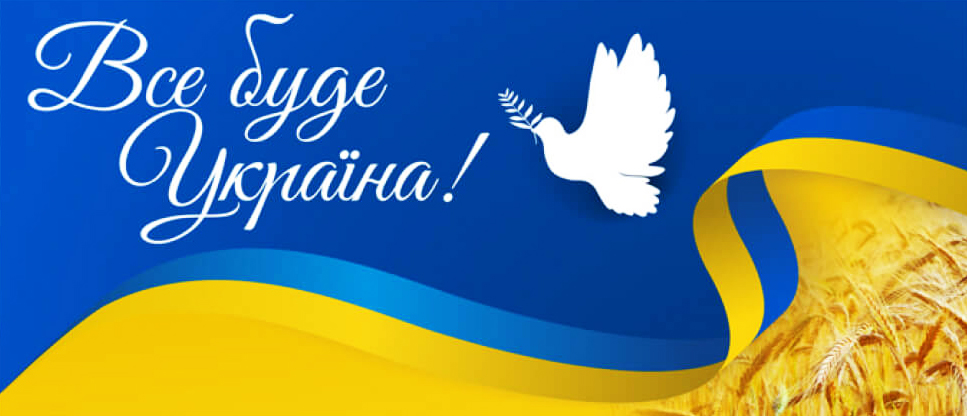

1. Вступ
Україна – це держава у Східній Європі, відома своєю багатою історією, унікальною культурою та мальовничими природними ландшафтами. Вона є найбільшою країною Європи за площею і відіграє важливу роль у міжнародній політиці, економіці та культурі. Її територія охоплює степи, гори, річки та узбережжя Чорного та Азовського морів. Славлячи свою давню історію, що починається з Київської Русі, Україна зберігає культурну спадщину у вигляді архітектури, музики, літератури та народних традицій. Сучасна незалежна держава активно розвивається та інтегрується у світове співтовариство, стаючи прикладом стійкості та інновацій.
2. Історія України
Історія України сягає тисячоліть, починаючи ще з трипільської культури та скіфських племен, і є надзвичайно різноманітною за своїм розвитком. Вона пройшла крізь численні випробування: періоди розквіту та занепаду, боротьбу за незалежність та утвердження державності. Важливі епохи, такі як Київська Русь, Козацька доба, період імперій та боротьба за незалежність у ХХ столітті, залишили глибокий слід у національній пам’яті. Ці історичні етапи визначили сучасну ідентичність України та її місце у світі.
Основні історичні періоди:2.1 Київська Русь
- Перша велика держава східних слов’ян
- Хрещення Київської Русі у 988 році князем Володимиром Великим.
- Розвиток торгівлі та культурних зв’язків із Європою.
2.2 Козацька доба
- Виникнення Запорізької Січі як фортеці та осередку військової демократії
- Гетьман Богдан Хмельницький та Визвольна війна, що стали символом національного спротиву.
- Формування політичних та соціальних зв’язків із сусідніми державами.
2.3 Україна у складі імперій
- Поділи території між Річчю Посполитою, Османською та Російською імперіями.
- Зародження українського національного руху у XIX столітті.
2.4 Боротьба за незалежність у ХХ столітті
- Встановлення Української Народної Республіки (1917–1921) як спроба державотворення.
- Період радянської окупації та трагічний Голодомор.
- Розпад СРСР та проголошення незалежності у 1991 році.
3. Культура та традиції
Українська культура є багатогранною, складаючись із народних традицій, мистецтва, музики, літератури та театру. Протягом століть вона формувалася під впливом різних цивілізацій, зберігаючи при цьому свою автентичність та унікальність. Народні звичаї, обряди та фольклор, разом із мелодійною українською мовою, створюють неповторний національний колорит. Сучасні митці та письменники продовжують традиції, доповнюючи їх інноваційними ідеями та сприяючи культурному збагаченню суспільства.
Основні культурні елементи:3.1 Українська мова
- Одна з наймилозвучніших мов світу.
- Має глибокі історичні корені.
- Визнана державною мовою України.
3.2 Народні традиції та свята
- Різдво та Великдень – головні релігійні свята, що об'єднують сім’ї.
- Купала, Масляна, Покрова та інші обряди відображають циклічність природи.
- Вишиванка – символ національної ідентичності та гордості.
3.3 Література та театр
- Класична література (Шевченко, Франко, Леся Українка) формує основу національної культури.
- Сучасні письменники вносять свіжі погляди у світову літературу.
- Розвиток театрального мистецтва підтримує культурну динаміку суспільства.
4. Природа та географія
Природа України є надзвичайно різноманітною, що робить її унікальною серед європейських країн. Від безкрайніх степів і густих лісів до величних Карпатських гір та мальовничих узбереж мор, кожен регіон має свій неповторний характер. Багато унікальних ландшафтів, національних парків та біосферних заповідників приваблюють туристів з усього світу. Розмаїття природних ресурсів сприяє розвитку екотуризму та збереженню біорізноманіття, що є важливим фактором у глобальних екологічних процесах
Основні природні особливості:4.1 Гори та річки
- Карпати – ідеальне місце для зимових видів спорту та активного відпочинку.
- Дніпро – головна водна артерія, що забезпечує транспорт та іригацію.
- Гірські хребти Криму – важлива природна пам’ятка.
4.2 Чорне та Азовське моря
- Популярні курорти Одеси, Затоки та Бердянська приваблюють численних туристів.
- Унікальна природа Кінбурнської коси відкриває можливості для екскурсій.
- Рибальство та морські традиції є важливими для місцевої економіки.
4.3 Національні парки та заповідники
- Асканія-Нова – один із найстаріших заповідників Європи, що охороняє рідкісну фауну.
- Шацькі озера – справжній природний скарб Волині.
- Біосферний заповідник «Чорнобильський» демонструє унікальні екологічні системи.
5. Економіка та сучасність
Економіка України базується на розвинених аграрному та промисловому секторах, що забезпечують значний внесок у світовий ринок. Країна є одним із найбільших експортерів зерна, металу та енергетичних ресурсів, що відображає її економічний потенціал. Сучасні реформи спрямовані на підвищення фінансової стабільності, залучення іноземних інвестицій та модернізацію виробництва. Розвиток IT-сектору та технологій відкриває нові можливості для економічного зростання та створення робочих місць. Такий комплексний підхід сприяє інтеграції України у глобальну економіку та підсилює її конкурентоспроможність.
Основні галузі економіки:5.1 Аграрний сектор
- Один із найбільших експортерів зерна у світі.
- Виробництво соняшникової олії, цукру та м’яса.
- Розвиток органічного землеробства сприяє екологічній стабільності.
5.2 Промисловість та енергетика
- Видобуток корисних копалин, таких як залізо та вугілля, є важливим для країни.
- Машинобудування та виробництво електроніки забезпечують сучасне виробництво.
- Альтернативна енергетика розвивається для забезпечення сталого майбутнього
5.3 ІТ-сектор та технології
- Україна є одним із лідерів у сфері аутсорсингу IT-послуг.
- Розвиток стартапів та технологічних компаній стимулює інновації.
- Популярність IT-освіти серед молоді сприяє формуванню кваліфікованих фахівців.
6. Висновок
Україна – це держава з глибоким історичним корінням, багатою культурною спадщиною та унікальними природними ресурсами.
Її історія, культура та економіка створюють міцну основу для подальшого розвитку та процвітання. Незважаючи на численні виклики, український народ зберігає свою самобутність, прагнення до свободи та незалежності.
Сучасна Україна демонструє стійкість та інноваційний підхід, що відкриває нові горизонти для її майбутнього. Завдяки своїм ресурсам та потенціалу, країна має всі передумови для успішної інтеграції у світове співтовариство. 